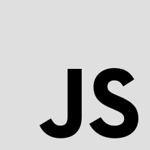
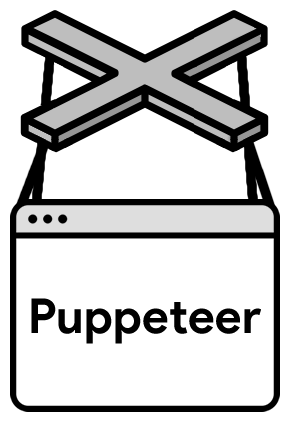

Nome: unity-scraping Github: https://github.com/thiagola92/unity-scraping
Um programa para fazer web scraping no site do Unity e criar um JSON com toda a API da Unity. Esse JSON foi utilizado para criar o projeto "autocomplete-unity".
 
Nome: Get Tournaments Github: https://github.com/thiagola92/Get-Tournaments
Tinha uma época em que eu estava participando de muitos torneios pequenos de League of Legends. Como o site deles não tinha um filtro para busca bom, eu criei um pequeno programa (crawler) que vai pegando todos os eventos/torneios do meu interesse.
Nome: Simples Criptografia Github: https://github.com/thiagola92/Simples-Criptografia
A ideia era fazer uma simples criptografia de mensagens.
Eu escrevo uma mensagem no console, essa mensagem é criptografada e salva em um arquivo txt.
É usado um outro programa para traduzir o que está no arquivo txt.